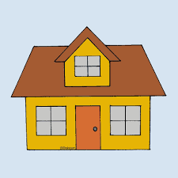
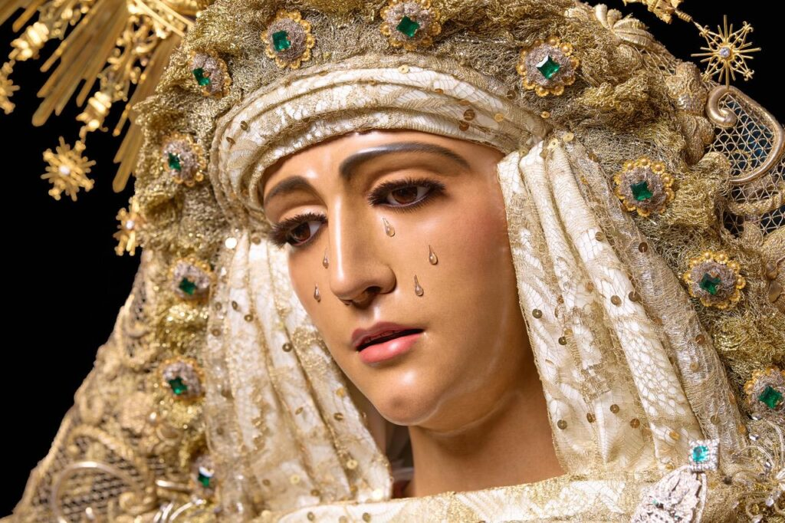
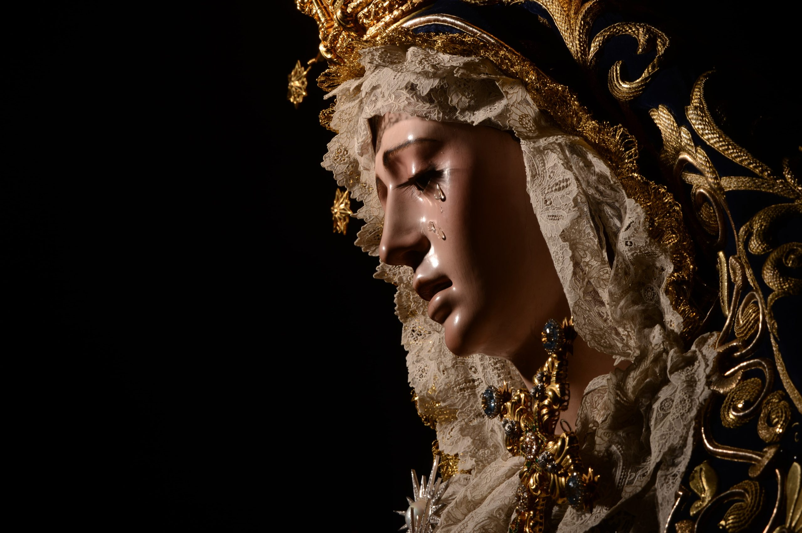

Nuestra Señora de la Amargura es una de las dolorosas más elegantes y clásicas de la imaginería sevillana. Su rostro refleja un profundo dolor contenido que ha inspirado gran devoción desde hace siglos.
La imagen fue realizada en 1696 por el escultor Pedro Duque Cornejo, uno de los grandes maestros del barroco sevillano. Su estilo refinado y delicado la convirtió rápidamente en una de las imágenes más admiradas de Sevilla.
Pertenece a la Hermandad de la Amargura, cuya sede se encuentra en la Iglesia de San Juan de la Palma. Procesiona el Domingo de Ramos, siendo uno de los momentos más destacados de ese día.
 |
 |
|
 |